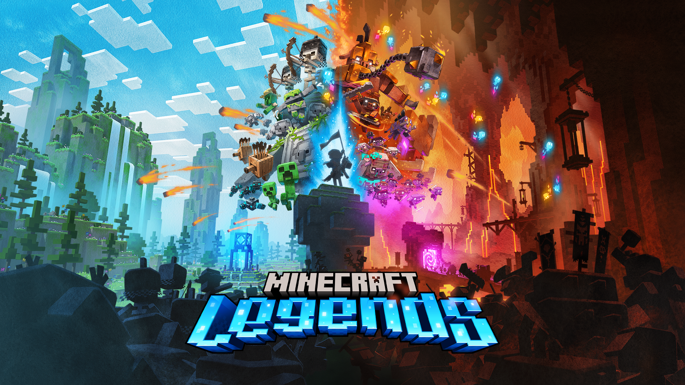

Minecraft is mutiplayar game.You can play with your friends in so many servers.
 Steve became a widely recognized character in the video game industry following the critical and commercial success of the Minecraft franchise. Considered by some critics as a mascot for the Minecraft intellectual property, his likeness has appeared extensively in advertising and merchandise, including wearable apparel and collectible items. The character has also inspired a number of unofficial media and urban legends, most notably the "Herobrine" creepypasta which became widely shared around internet communities as a meme during the 2010s.
Steve became a widely recognized character in the video game industry following the critical and commercial success of the Minecraft franchise. Considered by some critics as a mascot for the Minecraft intellectual property, his likeness has appeared extensively in advertising and merchandise, including wearable apparel and collectible items. The character has also inspired a number of unofficial media and urban legends, most notably the "Herobrine" creepypasta which became widely shared around internet communities as a meme during the 2010s.